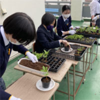
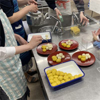
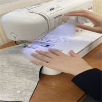
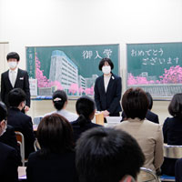
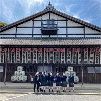

一部の教科科目において遠隔授業やオンデマンド授業を取り入れながら、クラスメートとともに教室で学習できるようにサポートしていきます。 ３年間での卒業をめざし、進学や就職といった社会的な自立を図ります。
授業時間３０時間／週コース独自の授業形態
毎日登校し、全ての授業を教室で受けることを目標にしていますが、教室に入ることが困難な場合は一部の授業を別室や自宅で通信の方法を用いて受けることができます。
| case1 | 登校して | 教室で | 通常授業 |
| ＋ | |||
| case2 | 登校して | 別室で | 遠隔授業 |
| ＋ | |||
| case3 | 登校せず | 自宅で | 遠隔授業 |
登校できる生徒は、１時間目から６時間目まで教室で通常授業を受けます。 登校が難しい生徒は、１年次の場合は３時間目までであれば教室以外の場所（自宅や別室）から通信の方法を用いて授業に参加することができます。 ただし、４時間目以降の授業は教室で受けなければなりません。なお、通信の方法を用いた授業を希望する場合には申請が必要です。
ワンステップコースは通信制ではなく、 登校することを前提とした全日制普通科です。 全ての授業を通信の方法を用いて受けられるわけではありません。 通信の方法で受けられる授業は１年次１５単位、２年次１２単位、３年次８単位と進級するにしたがって少なくなっていきます。
|
遠隔授業
Ｗｅｂ会議システムを利用して教室で行っている授業を同時双方向で配信します。授業中は教員と生徒が互いに映像・音声等によるやり取りが行えます。 |
オンデマンド Ｗｅｂ会議システムを利用して教室で行っている授業を録画して配信します。放課後や長期休業中等を利用し、学習します。学習後はレポートを提出し、添削指導を受けます。 |
特別なカリキュラム
コース独自の設定科目で、無理なく学習ができるカリキュラムです。
基礎的内容の学び直し
４つの基礎科目では小中学校の学習にもどり、つまずきを解消します。
■ 基礎国語 ■ 基礎数学 ■ 基礎英語 ■ 基礎学習
個々の学習到達度に対応
ｅ-ラーニング教材「すらら」も活用し、一人ひとりに合わせた課題に取り組みます。
コミュニケーション能力の育成
幅広い科目を通して社会生活に必要な能力を育て、コミュニケーション能力を高めます。
■ 園芸
■ 手芸
■ 調理
■ 産業社会と人間
■ 就職社会



学校行事への参加
学校行事は高校生活に欠かせない経験です。 入学式と遠足は、ワンステップコース独自で実施します。 また、体育祭や文化祭などの全校一斉行事については個々の希望に合わせて決定します。
 |
 |
|
| 入学式 | 遠足 | 体育祭 |
教育課程
| 科目 | １年 | ２年 | ３年 | |
|---|---|---|---|---|
| 国語 | 現代の国語 | 2 | ||
| 言語文化 | 2 | |||
| 論理国語 | 2 | 2 | ||
| 古典鑑賞 | 2 | |||
| 基礎国語 | 2 | 2 | ||
| 地理歴史 | 地理総合 | 2 | ||
| 歴史総合 | 2 | |||
| 公民 | 公共 | 2 | ||
| 就職社会 | 2 | |||
| 数学 | 数学Ⅰ | 3 | ||
| 数学A | 2 | |||
| 基礎数学 | 2 | 2 | ||
| 理科 | 化学基礎 | 〇2 | 2 | |
| 生物基礎 | 2 | |||
| 地学基礎 | 2 | |||
| 保健体育 | 体育 | 2 | 2 | 3 |
| 保健 | 1 | 1 | ||
| 芸術 | 音楽Ⅰ | 2 | ||
| 美術Ⅰ | 1 | |||
| 書道Ⅰ | 1 | |||
| 外国語 | 英語コミュニケーションⅠ | 3 | ||
| 英語コミュニケーションⅡ | 4 | |||
| 論理・表現Ⅰ | 2 | |||
| 基礎英語 | 2 | 2 | ||
| 家庭 | 家庭基礎 | 2 | ||
| 情報 | 情報Ⅰ | 2 | ||
| 小計 | (27)29 | 20 | 20 | |
| 基礎 | 基礎学習 | □1 | ||
| 産社 | 産業社会と人間 | 1 | 2 | |
| 情報 | 情報産業と社会 | □1 | ||
| 園芸 | 園芸 | 2 | 2 | |
| 家庭 | 手芸 | 2 | 2 | |
| 調理 | 2 | 2 | ||
| 小計 | (2) | 7 | 8 | |
| 総合的な探究の時間 | 2 | 1 | ||
| 特別活動(ホームルーム) | 1 | 1 | 1 | |
| 単位数合計 | 30 | 30 | 30 | |
| 学校指定科目 | ||||
| 通信の方法を用いた授業でも可 | ||||
| 教室等での正規の授業 | ||||
| １年次は〇１科目か□２科目の選択 | ||||
適性を総合的に判断し、２年次から他のコースへの変更も可能です。